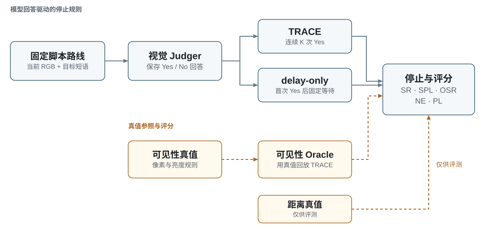
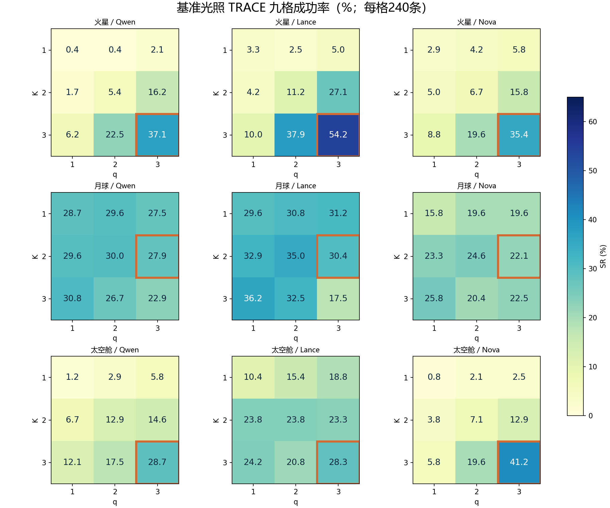
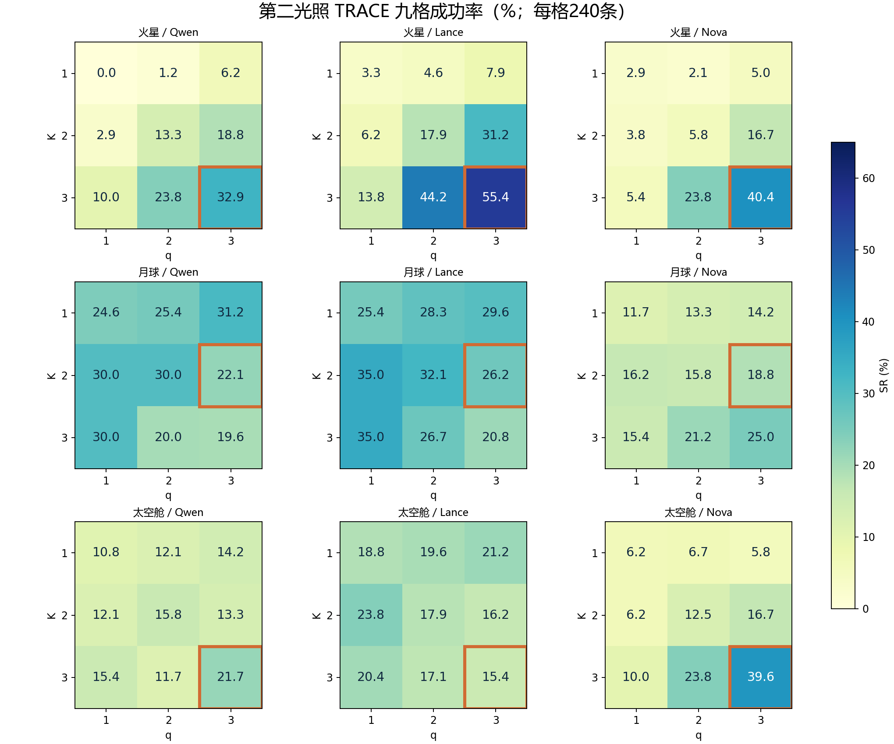

太空 VLA Benchmark
在太空仿真环境的固定轨迹上，评测视觉目标识别与语义停止策略。
GitHub · 项目介绍页 · English · 评测协议 · 数据说明 · 数据下载 · 实验结果 · 复现结果表


火星 A · Jezero 地形01 / 03
目标：蓝色集装箱
点击两侧预览或下方场景按钮切换视频。视频由已有基准光照 dev 图像按完整脚本轨迹回放，每帧展示0.6秒，无音轨。播放节奏用于展示，不代表实时运行速度或模型触发停止的在线演示。支持播放、暂停与全屏。
概述
太空 VLA Benchmark 研究视觉语言模型能否识别目标，以及这一判断能否让机器人在合适的位置停止。项目在火星、月球和太空舱场景中提供固定脚本 T 轨与配对光照，使用统一协议评测 Qwen2.5-VL-3B、Lance_3B 和 Nova Lite 1.0。
本地仿真器提供图像与位姿。Judger 只接收当前图像和目标短语，输入不包含位姿、mask、目标坐标、距离、可见性标签或前次回答。保存的模型回答驱动 TRACE 和 delay-only，可见性真值驱动 Oracle 参照。本基准评测仿真固定轨迹上的视觉目标识别与停止决策。
数据与划分
| 数据规模 | 数值 |
|---|---|
| 世界 / 场景 | 3 / 9 |
| 独立配对路线 | 900 |
| 每种光照帧数 / 总帧数 | 32,800 / 65,600 |
| 每场景路线数 | 20 dev + 80 test |
| 每世界路线数 | 60 dev + 240 test |
| 视觉判断模型数 | 3 |
| 每种光照的 test 模型×路线对 | 2,160 |
第二光照沿用相同的路线 ID、目标、相机和数据划分。其 dev 图像也已采集；光照对比使用 test 路线，并沿用在基准光照 dev 上冻结的参数。
实验设计

| 世界 | 基准光照 → 第二光照 | 冻结 K/q |
|---|---|---|
| 火星 | 太阳高度角35° → 8° | 3/3 |
| 月球 | A/B：sunlit → sun_east；C：psr → sunlit | 2/3 |
| 太空舱 | 正常 → 暗光；灯强60000 → 12000 | 3/3 |
Moon C 的 solar-on 是人为设置的受控光照对照，不能解释为真实地理永久阴影区的自然照明。
每个世界的 dev 选参均对三个模型等权汇总。候选范围为 K∈{2,3}、q∈{1,2,3}，完整报告网格额外包含 K=1。test 数据不用于选择模型、Prompt 或参数；查询帧由各模型的实际回答序列决定。 详细评测协议。
数据下载
选择所需世界与光照。每组包含300条路线：60 dev 与240 test。
数据已发布 · dataset-v1.0
| 世界 | 光照 | 路线 | 帧数 | 体积 | 下载 |
|---|---|---|---|---|---|
| 火星 | 基准光照 | 300 | 9,879 | 7.85 GB | 5个 ZIP |
| 火星 | 第二光照 | 300 | 9,879 | 6.36 GB | 4个 ZIP |
| 月球 | 基准光照 | 300 | 10,821 | 6.36 GB | 4个 ZIP |
| 月球 | 第二光照 | 300 | 10,821 | 7.23 GB | 5个 ZIP |
| 太空舱 | 基准光照 | 300 | 12,100 | 11.52 GB | 7个 ZIP |
| 太空舱 | 第二光照 | 300 | 12,100 | 5.93 GB | 4个 ZIP |
两种光照共享900条独立配对路线，共65,600帧。包含 RGB、语义标注、目标 mask、路线记录与仅供评测的真值。体积以十进制 GB 显示。
下载与校验说明
- 展开所需组，下载其中全部 ZIP 分包。完整数据集需要下载全部六组。
- 解压前，将每个文件与 SHA256 校验清单核对。
- 全部解压到同一目录。每个 ZIP 独立可解压，无需拼接文件。
Get-FileHash -Algorithm SHA256 -LiteralPath '.\YOUR_DOWNLOADED_FILE.zip'每组解压目录内附有 verify_dataset_download.py 与核验说明。评测真值不能传入 Judger。数据包不含场景源资产与模型权重。
实验结果
主 TRACE 使用各世界冻结的 K/q， 每个单元格均为240条 test 路线：
| 世界 | 模型 | 基准光照 SR | 第二光照 SR | 差值（pp） |
|---|---|---|---|---|
| 火星 | Qwen2.5-VL-3B | 89/240 · 37.08% | 79/240 · 32.92% | -4.17 |
| 火星 | Lance_3B | 130/240 · 54.17% | 133/240 · 55.42% | +1.25 |
| 火星 | Nova Lite 1.0 | 85/240 · 35.42% | 97/240 · 40.42% | +5.00 |
| 月球 | Qwen2.5-VL-3B | 67/240 · 27.92% | 53/240 · 22.08% | -5.83 |
| 月球 | Lance_3B | 73/240 · 30.42% | 63/240 · 26.25% | -4.17 |
| 月球 | Nova Lite 1.0 | 53/240 · 22.08% | 45/240 · 18.75% | -3.33 |
| 太空舱 | Qwen2.5-VL-3B | 69/240 · 28.75% | 52/240 · 21.67% | -7.08 |
| 太空舱 | Lance_3B | 68/240 · 28.33% | 37/240 · 15.42% | -12.92 |
| 太空舱 | Nova Lite 1.0 | 99/240 · 41.25% | 95/240 · 39.58% | -1.67 |

在2,160个模型×路线对中，主 TRACE 成功率由 33.94%降至30.28% （−3.66个百分点）。9组中7组下降、2组上升。TRACE 低于 delay-only 的组数分别为 基准光照9/9 和 第二光照8/9 ；这些差异仅为描述性比较，不代表统计显著性结论。
网页可对比四种停止规则的 SR 和 SPL，结果文件还包含完整 K/q 参数网格。可见性 Oracle 用可见性真值替代模型回答，并非距离成功率的理论上界。
TRACE K/q 参数九宫图
世界×模型共9幅小图。每幅图纵轴为 K、横轴为 q，单元格为240条 test 路线的 SR（%）。橙框标出 dev 冻结参数，未根据 test 重新选参。火星第二光照为8°。点击图像可查看原尺寸。




对比停止规则：SR / SPL
使用各世界在 dev 上冻结的 K/q；每格240条 test 路线。
| 世界 | 模型 | 基准光照 SR | 第二光照 SR | 差值 pp | 基准光照 SPL | 第二光照 SPL |
|---|
快速开始
使用 Python 3.12+ 即可汇总已有数值结果。脚本仅依赖标准库，无需 GPU、Isaac、模型凭据或额外安装依赖。
python -B analysis/summarize_results.py
python -B analysis/summarize_results.py --method delay_only
python -B analysis/summarize_results.py --method oracle_visibility
python -B analysis/summarize_results.py --all-grid这些命令用于 重新聚合已保存的回放指标，不重新生成图像、模型预测或回放结果。发布包包含120,960行数值回放记录（2种光照 × 3个模型 × 3个世界 × 240条路线 × 28个单元格）。这些重复记录不代表独立路线或新增模型调用。
在仓库根目录运行以下命令，可预览双语页面并下载本地数据包：
powershell.exe -NoProfile -ExecutionPolicy Bypass -File .\scripts\preview_site.ps1然后访问 http://127.0.0.1:8766/index.zh-CN.html。下载期间保持预览窗口开启。页面使用本地资源，不包含分析跟踪或外部 CDN。直接打开 site/dist/index.zh-CN.html 也能查看页面，但下载本地数据包需要上述预览服务。 GitHub Pages 发布说明。
文件导航
| 位置 | 内容 |
|---|---|
sfb/ | 18个核心模块：动作、位姿、TRACE、回答解析、Judger 适配器与可见性工具 |
analysis/ | 独立的已有结果汇总入口 |
results/ | 主表、完整参数网格、路线划分、数据集元信息与来源哈希 |
protocols/、 configs/ | 公开评测协议、原数据格式约定与相机/动作配置 |
tools/verify_dataset.py | 原有的独立数据完整性校验器 |
site/dist/ | 双语静态介绍页、真实场景示例与交互结果表 |
docs/ | 方法、数据说明、复现范围、局限与素材署名 |
完整 RGB、语义标注和 mask 数据通过独立的 数据包提供，不存放在代码仓库中。发布内容不包含第三方场景/网格、模型权重或推理服务；HTTP 客户端需要单独配置匹配的模型服务。详见 代码范围。
局限与说明
- Qwen 在线确认覆盖180条基准光照 dev 路线：动作/位姿前缀及同回答控制器回放在180/180条路线上一致，停止帧在164/180条路线上一致。该确认未覆盖三个模型的全部在线运行。
- 太空舱基准光照与在线重拍之间，有83/1,086组图像的 PSNR 低于40 dB；跨进程重拍的图像一致性仍有限制。
- 在已说明的计时范围内，太空舱采集平均为1.273192秒/帧，含 HTTP 的在线循环平均为1.840710秒；两项测量采用不同计时口径。
- Nova 通过云端 API 访问，其部署权重与服务端处理过程无法独立检查。
- 结果覆盖仿真中的固定脚本轨迹，评测范围不包含自主导航或真实机器人表现。
署名与引用
作者、单位及代码/数据许可证待确认。第三方素材保留各自的署名与分发要求。